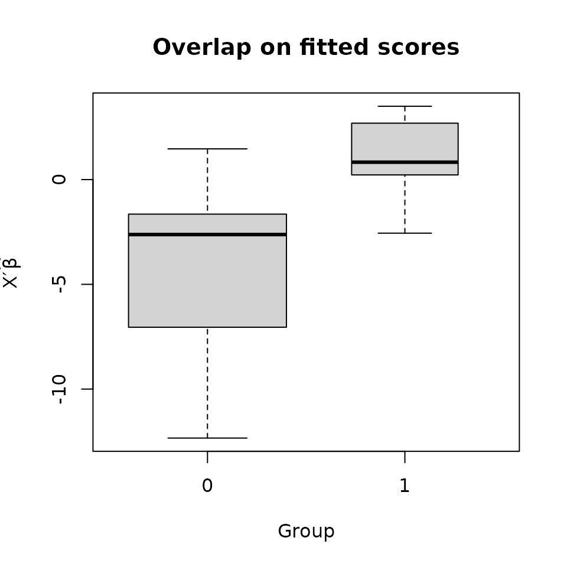
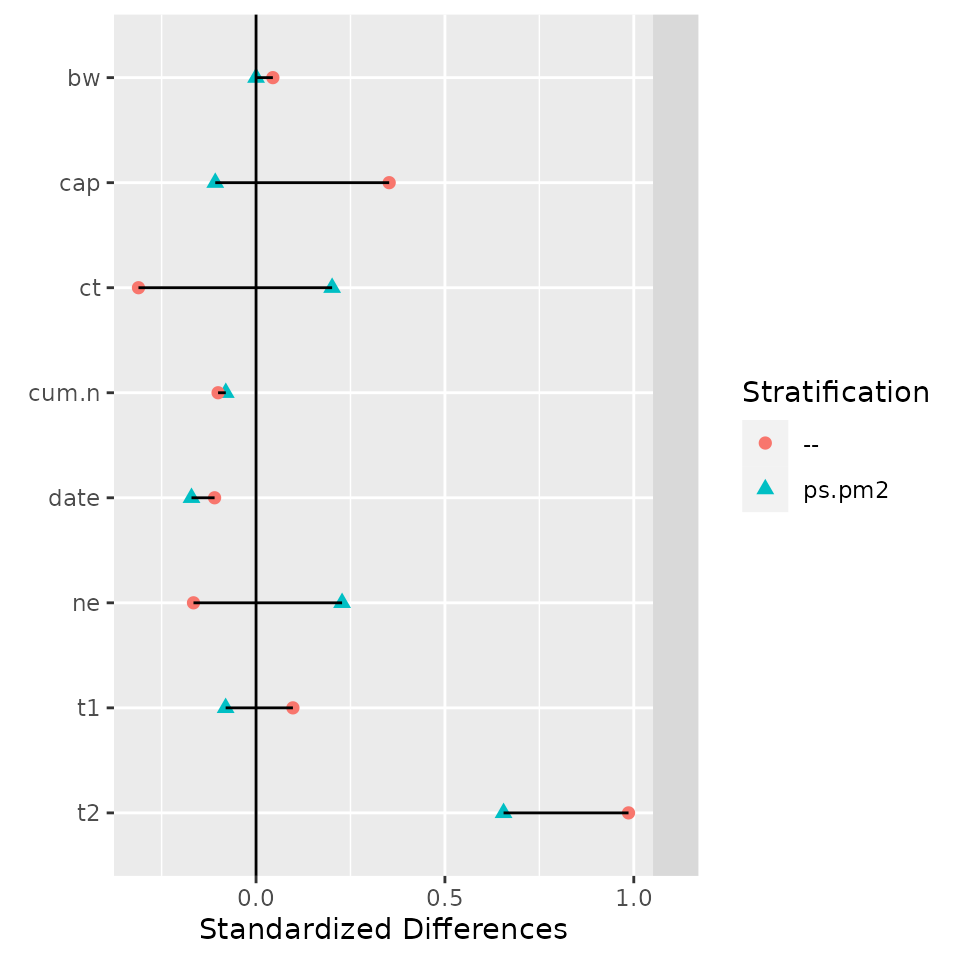

Matching in R using the optmatch package
Ben B. Hansen, Mark Fredrickson, Josh Errickson, and Josh Buckner
2024-09-19
Source:vignettes/fullmatch-vignette.Rmd
fullmatch-vignette.RmdThe R Environment
All the software used in this worksheet is freely available. The R statistical package is installed for you in the lab, but you may download and install R for Windows, Mac, and Linux systems from: https://www.r-project.org.
The following document walks through a common propensity score
matching work-flow in R. Example R code will appear
with a > indicating the command prompt. You may type
this code yourself — each line is a command to R. Output will
follow prefaced by ##. (In R, #
represents a comment; any command preceded by any number of
#’s will not be executed.) For example:
(Note that when entering the code yourself, do not include the
> in your command. Also, for longer lines of code in
this document, the text may wrap onto a second line, with the second
line preceded by a + sign. When entering the code yourself,
you do not have to wrap the lines, and do not include the
+.)
R stores data in named variables using the arrow operator:
Setup
Outfitting your R with the proper add-ons
R add-on packages are available to install directly from R:
Thi command will ask you to select a CRAN server. Any server will do. You may also be asked whether you’d like to set up a “personal library to install packages into”; if so, answer yes. (The default personal library location that R will suggest should be OK.) You’ll only need to run these commands the first time you want to use optmatch on a particular computer, or when you install a new version of R.
Setting up the R environment for matching
Attach extension packages that we’ll be using for matching and associated diagnostics:
You’ll do this each time you start a new R session and want to run matching commands.
To load the nuclear plants data, enter
To see the first six rows:
> head(nuclearplants)
## cost date t1 t2 cap pr ne ct bw cum.n pt
## H 460.05 68.58 14 46 687 0 1 0 0 14 0
## I 452.99 67.33 10 73 1065 0 0 1 0 1 0
## A 443.22 67.33 10 85 1065 1 0 1 0 1 0
## J 652.32 68.00 11 67 1065 0 1 1 0 12 0
## B 642.23 68.00 11 78 1065 1 1 1 0 12 0
## K 345.39 67.92 13 51 514 0 1 1 0 3 0For more on the variables here, enter
You can directly access a variable within this data frame as follows. (Try typing in the commands to see what they do.)
The variable you will have just viewed and tabulated,
pt, is a dummy for whether the plant was built with
“partial turnkey guarantees.” These plants were not comparable to the
others in terms of construction costs. Let’s exclude them for the time
being, for simplicity. To do this we’ll create a data table (in
R jargon, a “data frame”) of just those observations for which
pt is 0:
To inspect its first six or last six entries, do
To view this as presenting a matching problem, we’ll think of plants
built on the site of a previously existing plant (pr == 1)
as the treatment group and plants on new sites (pr == 0) as
comparisons.
Optimal pair matching and 1:k matching
Pair matching
To check the number of treated and control plants:
To get the pair match minimizing the mean paired distance on
cap, among all collections of 7 non-overlapping pairs,
do
> pairmatch(pr ~ cap, data = nuke.nopt)
## H I A J B K L M C N O P Q R S T
## <NA> 1.1 1.1 1.2 1.2 <NA> 1.7 <NA> 1.3 <NA> <NA> <NA> 1.4 1.5 1.3 <NA>
## U D V E W F X G Y Z
## 1.6 1.4 <NA> 1.5 <NA> 1.6 <NA> 1.7 <NA> <NA>For a more readable report of who gets matched to whom, type
> print(pairmatch(pr ~ cap, data = nuke.nopt), grouped = TRUE)
## Group Members
## 1.1 I, A
## 1.2 J, B
## 1.3 C, S
## 1.4 Q, D
## 1.5 R, E
## 1.6 U, F
## 1.7 L, GFor matching on both date and cap, you’d
type pairmatch(pr ~ cap + date, ...) instead of
pairmatch(pr ~ cap, ...). We’ll talk later about how this
combines discrepancies on the two variables. For now, note the form of
the output this command generates: a variable of the same length as the
variables making up nuke.nopt, assigning a distinct name to
each matched set. To fix your intuition, you might try connecting up
below the units that pairmatch() has placed in the same
matched sets.
| Plant | Date | Capacity | Plant | Date | Capacity |
|---|---|---|---|---|---|
| A | 2.3 | 660 | H | 3.6 | 290 |
| B | 3.0 | 660 | I | 2.3 | 660 |
| C | 3.4 | 420 | J | 3 | 660 |
| D | 3.4 | 130 | K | 2.9 | 110 |
| E | 3.9 | 650 | L | 3.2 | 420 |
| F | 5.9 | 430 | M | 3.4 | 60 |
| G | 5.1 | 420 | N | 3.3 | 390 |
| O | 3.6 | 160 | |||
| P | 3.8 | 390 | |||
| Q | 3.4 | 130 | |||
| R | 3.9 | 650 | |||
| S | 3.9 | 450 | |||
| T | 3.4 | 380 | |||
| U | 4.5 | 440 | |||
| V | 4.2 | 690 | |||
| W | 3.8 | 510 | |||
| X | 4.7 | 390 | |||
| Y | 5.4 | 140 | |||
| Z | 6.1 | 730 |
For basic summary information about this match, try
If you’ve already typed in the pairmatch(...) part, you
can use the up-arrow, Home and End keys to avoid having to re-type.
Alternatively, to assign the name “pm” to the matching
result, do
Now, you can just type print(pm, grouped = TRUE) or
summary(pm).
The following would give a basic matched analysis of the effect of
new or existing site on construction costs is given with the help of
R’s linear modeling function. In effect, the existing site
effect is estimated as one “way” in a two-way , the other “way” being
the factor variable that represents the matching result,
i.e. pm.
Matching with multiple controls
There are other types of matches you might want to try. Here’s how to create matched triples (each treatment group unit is matched to two control group units):
Did matching work?
It’s possible to give the software an impossible list of requirements for a match. For instance, try running the following:
The problem here is that the data don’t have 3 comparison units to go with each treatment unit, since we have 7 treatment units but only 19 comparison units.
Matching can also fail because the distance matrix embodies matching constraints that are impossible to meet. In these cases the matching function will generally run without complaint, although it won’t create any matches. Here is an example, where the caliper is so narrow as to forbid all possible matches:
> pairmatch(pr ~ cap + cost, caliper=.001, data = nuke.nopt)
## Warning in fullmatch.InfinitySparseMatrix(x = x, min.controls = controls, : Matching failed. (Restrictions impossible to meet?)
## Enter ?matchfailed for more info.
## H I A J B K L M C N O P Q R S T
## <NA> <NA> <NA> <NA> <NA> <NA> <NA> <NA> <NA> <NA> <NA> <NA> <NA> <NA> <NA> <NA>
## U D V E W F X G Y Z
## <NA> <NA> <NA> <NA> <NA> <NA> <NA> <NA> <NA> <NA>Behind the scenes, the caliper argument restricts how
the maximum distance between matched objects. For example, consider
Table 1 above. Plants A and H are 1.3 units apart in date.
If we assigned caliper=1, they could never be matched
because they exceed the caliper limit.
If before matching you want to remove just the subjects lacking a
counterpart within caliper distance, you can do
pairmatch(..., remove.unmatchables = TRUE). That won’t help
with the minuscule caliper above, but with less extreme calipers it
helps you salvage a few matches.
Did matching balance the covariate?
Comparing overt biases before and after matching. An assessment of
the unmatched difference between the groups on cap can be
had via:
The output is suppressed, as most of it is not relevant to balance. This variation hones in on the part that is:
> summary(lm(cap ~ pr, data = nuke.nopt))$coeff["pr",]
## Estimate Std. Error t value Pr(>|t|)
## 79.7368421 92.7031668 0.8601307 0.3982280(Note again the use of square brackets, [ and
], for specifying subsets of a matrix. With R one
has to carefully distinguish square brackets, curly brackets and
parentheses.)
Here is a parallel calculation that takes the match pm
into account.
> summary(lm(cap ~ pr + pm, data = nuke.nopt))$coeff["pr",]
## Estimate Std. Error t value Pr(>|t|)
## -6.5714286 4.2865079 -1.5330495 0.1761543The RItools
package’s RItools::balanceTest() function zeroes in on
balance, and facilitates checking balance on multiple variables at the
same time. Here are some examples:
## strata(): --
## stat Treatment Control adj.diff std.diff z
## vars
## cap 883 803 79.7 0.39 0.86
## t2 66.9 59.5 7.33 0.68 1.61
## ---Overall Test---
## chisquare df p.value
## -- 2.71 2 0.258
## ---
## Signif. codes: 0 '***' 0.001 '** ' 0.01 '* ' 0.05 '. ' 0.1 ' ' 1> balanceTest(pr ~ cap + t2 + strata(pm) - 1, data = nuke.nopt)
> # The `- 1` suppresses the unmatched output to make the output cleaner## strata(): pm
## stat Treatment Control adj.diff std.diff z
## vars
## cap 883 890 -6.57 -0.03 -1.40
## t2 66.9 61.3 5.57 0.54 1.49
## ---Overall Test---
## chisquare df p.value
## pm 6.73 2 0.0345
## ---
## Signif. codes: 0 '***' 0.001 '** ' 0.01 '* ' 0.05 '. ' 0.1 ' ' 1Exercises.
- Compare
pm,tmand the unmatched samples in terms of balance ont2. - Compare
pm,tmand the unmatched samples in terms of balance ondate. - Compare
pmto Mahalanobis pair matching ont1in terms of balance ondate. - Compare Mahalanobis pair matching on
capanddateto Mahalanobis pair matching oncap,dateand each oft1,t2. Add the last two variables in one at a time, so that you’re comparing a total of three matches. Compare on balance incapandt2.
Section “Checking balance in general”, below, presents convenient ways to do balance assessment for many variables at once. Before getting to that let’s discuss try matching with propensity scores.
Propensity Score Matching
Propensity score fitting in R
Logistic regression models are fit in R using the function
glm(), with family argument set to
binomial. Example:
> psm <- glm(pr ~ date + t1 + t2 + cap + ne + ct + bw + cum.n + pt,
+ family = binomial, data = nuclearplants)The fitted logistic regression is then stored in the object
psm. The propensity scores can be accessed with
psm$fitted.values (estimated probabilities) or
scores(psm) (estimated logits of probabilities).
It’s often a good idea to compare the groups’ distributions on the propensity score.

The groups do overlap, if not greatly. It may be wise to restrict the sample to the region of overlap, at least roughly. A propensity caliper would help with this.
First, let’s match directly on the propensity score without restricting the sample to the region of overlap.
> ps.pm <- pairmatch(psm, data = nuclearplants)
> summary(ps.pm)
## Structure of matched sets:
## 1:1 0:1
## 10 12
## Effective Sample Size: 10
## (equivalent number of matched pairs).To restrict to the overlapping region, we want to imply a caliper to the distances generated by the propensity score model. To do this requires a more explicit generation of the match, involving separate steps for generation of the distances followed by matching upon those distances.
First, we create a distance matrix based upon psm:
psm.dist is a matrix with an entry corresponding to the
distance between each potential pair of treatment and control units. We
can caliper directly on this distance matrix,
> caliper(psm.dist, 2)
## control
## treated H I J K L M N O P Q R S T U V W X Y
## A Inf Inf Inf Inf Inf Inf Inf Inf Inf Inf Inf Inf Inf 0 0 Inf Inf Inf
## B Inf 0 Inf Inf Inf 0 0 0 Inf 0 0 0 0 0 0 0 Inf Inf
## C Inf 0 0 Inf Inf 0 0 0 Inf 0 0 0 0 0 Inf 0 0 Inf
## D Inf Inf Inf Inf Inf Inf Inf Inf Inf Inf Inf 0 Inf 0 0 Inf Inf Inf
## E Inf 0 Inf Inf Inf 0 0 0 Inf 0 0 0 0 0 0 0 0 Inf
## F Inf 0 Inf Inf Inf 0 Inf 0 Inf Inf 0 0 0 0 0 Inf Inf Inf
## G Inf 0 Inf Inf Inf 0 0 0 Inf 0 0 0 0 0 0 0 Inf Inf
## a Inf 0 Inf Inf Inf Inf Inf Inf Inf Inf 0 0 0 0 0 Inf Inf Inf
## b Inf Inf Inf Inf Inf Inf Inf Inf Inf Inf Inf Inf Inf 0 0 Inf Inf Inf
## c Inf 0 Inf Inf Inf 0 0 0 Inf 0 0 0 0 0 0 0 Inf Inf
## control
## treated Z d e f
## A Inf 0 Inf Inf
## B 0 0 Inf 0
## C 0 0 Inf 0
## D Inf 0 Inf Inf
## E 0 0 Inf 0
## F 0 0 Inf 0
## G 0 0 Inf 0
## a 0 0 Inf 0
## b Inf 0 Inf Inf
## c 0 0 Inf 0Entries which are Inf will never be matched. Adding the
caliper to psm.dist will disallow matching between units
which differ by more than 2 standard deviations.
(Note that this differs from the previous use of caliper
directly in pairmatch, where the caliper is applied
directly to the distances instead of smartly upon the standard
deviations between the propensity scores.)
Combining the above, we can now
> ps.pm2 <- pairmatch(psm.dist, data = nuclearplants)
> ps.pm3 <- pairmatch(psm.dist + caliper(psm.dist, 2), data = nuclearplants)
> all.equal(ps.pm, ps.pm2, check.attributes=FALSE)
## [1] TRUE
> all.equal(ps.pm, ps.pm3, check.attributes=FALSE)
## [1] "7 string mismatches"
> summary(ps.pm3)
## Structure of matched sets:
## 1:1 0:1
## 10 12
## Effective Sample Size: 10
## (equivalent number of matched pairs).Or you could match within calipers of the propensity score on some
other distance, perhaps Mahalanobis distances based on selected
covariates as recommended by Rubin and Thomas (2000, JASA) and others.
For Mahalanobis matching on date, cap and the
propensity score, for instance, combined with a propensity caliper of 1
pooled sd.
> mhd1 <- match_on(pr ~ date + cap + scores(psm), data=nuclearplants)
> mhpc.pm <- pairmatch(mhd1, caliper=1, data=nuclearplants)
> summary(mhpc.pm) # oops
## Structure of matched sets:
## 1:1 0:1
## 10 12
## Effective Sample Size: 10
## (equivalent number of matched pairs).
> mhpc.pm <- pairmatch(mhd1, caliper=2, data=nuclearplants)
> summary(mhpc.pm) # better!
## Structure of matched sets:
## 1:1 0:1
## 10 12
## Effective Sample Size: 10
## (equivalent number of matched pairs).Checking balance in general
The RItools package has a convenient function for checking balance on many variables simultaneously. To get a sense of what it does, try this:
> balanceTest(pr ~ date + t1 + t2 + cap + ne + ct + bw + cum.n,
+ data = nuclearplants)
> balanceTest(pr ~ date + t1 + t2 + cap + ne + ct + bw + cum.n + pt +
+ strata(ps.pm2) - 1,
+ data = nuclearplants)It can in the same display compare matching to no matching, on any of a number of axes. Here is a demonstration:
> myb <- balanceTest(pr ~ date + t1 + t2 + cap + ne + ct + bw + cum.n +
+ strata(ps.pm2),
+ data = nuclearplants)
> plot(myb)
> print(myb, digits=1)## strata(): ps.pm2 --
## stat Treatment Control adj.diff std.diff z Treatment Control adj.diff std.diff z
## vars
## date 68 69 -0.2 0 0 68 69 -0.1 0 0
## t1 14 14 -0.3 0 0 14 14 0.4 0 0
## t2 69 63 6 1 2 69 59 10 1 2
## cap 870 890 -20 0 0 870 805 65 0 1
## ne 0.2 0.1 0.10 0 1 0.2 0.3 -0.07 0 0
## ct 0.3 0.2 0.1 0 0 0.3 0.5 -0.2 0 -1
## bw 0.2 0.2 0.00 0 NA 0.2 0.2 0.02 0 0
## cum.n 8 9 -0.5 0 0 8 9 -0.6 0 0
## ---Overall Test---
## chisquare df p.value
## ps.pm2 7 7 0.4
## -- 11 8 0.2
## ---
## Signif. codes: 0 '***' 0.001 '** ' 0.01 '* ' 0.05 '. ' 0.1 ' ' 1
For a very compact representation of the assessment, call
summary() on the match, passing along the fitted propensity
model as a second argument. If you’ve got RItools
loaded, then this will call balanceTest() in the
background, reporting the summary chi-square test results.
> summary(ps.pm2, psm)
## Structure of matched sets:
## 1:1 0:1
## 10 12
## Effective Sample Size: 10
## (equivalent number of matched pairs).
##
## Balance test overall result:
## chisquare df p.value
## 7.31 8 0.503Exercise.
Try out {at least 3} different combinations of propensity score and Mahalanobis matching. Identify the matches that gives:
- the “best balance overall,” as measured by Chi-square statistics;
- the “best balance overall,” as indicated by the largest standardized difference among the covariates;
- the best balance on
dateandcap, as measured by the larger of the standardized differences for these two variables; and - the best balance on
dateandcap, as measured by the larger of the standardized differences for these two variables, among those matches for which the overall imbalance p-value is no more than .1.
Other topics in matching
Subclassification before matching
Recall that the data set nuclearplants had 32
observations, 6 of which we excluded. These were plants built under
“partial turnkey” guarantees (pt == 1), for which costs are
difficult to compare with other plants. We might include the excluded
plants by matching them only among themselves. Then we need to
subclassify prior to matching.
This is a common and useful operation, and optmatch
is designed to help you do it via a strata term in the
matching formula.
> pairmatch(pr ~ date + cap + scores(psm), data=nuclearplants)
## H I A J B K L M C N O P Q R S T
## <NA> 1.1 1.1 <NA> 1.2 <NA> <NA> 1.4 1.3 1.3 <NA> <NA> <NA> 1.2 <NA> 1.8
## U D V E W F X G Y Z d e f a b c
## 1.7 1.4 1.5 1.5 <NA> 1.6 1.6 1.7 <NA> <NA> 1.9 <NA> 1.10 1.8 1.9 1.10
> pairmatch(pr ~ date + cap + scores(psm) + strata(pt), data=nuclearplants)
## H I A J B K L M C N O P Q R S T
## <NA> 0.1 0.1 <NA> 0.2 <NA> <NA> 0.4 0.3 0.3 <NA> <NA> <NA> 0.2 <NA> <NA>
## U D V E W F X G Y Z d e f a b c
## 0.7 0.4 0.5 0.5 <NA> 0.6 0.6 0.7 <NA> <NA> 1.2 1.1 1.3 1.1 1.2 1.3Distances
You’ll often want to do several variations on a match. It may save
computation and typing time to store the distance you’re using to match,
if you’re going to re-use that distance. To do so, you’ll have to
explicitly separate distance-making and matching, two steps that we’ve
merged together thus far. We’ll use the match_on() to
create distances.
> cap.dist <- match_on(pr ~ cap, data = nuke.nopt)
> pm1 <- pairmatch(pr ~ cap, data=nuke.nopt)
> pm2 <- pairmatch(cap.dist, data=nuke.nopt)
> all.equal(pm1, pm2, check.attributes = FALSE)
## [1] TRUE
> summary(pm2)
## Structure of matched sets:
## 1:1 0:1
## 7 12
## Effective Sample Size: 7
## (equivalent number of matched pairs).What does a matching distance look like? Here’s the upper-left corner of one of them:
> round(cap.dist[1:3, 1:3], 1)
## control
## treatment H I J
## A 1.8 0.0 0.0
## B 1.8 0.0 0.0
## C 0.6 1.2 1.2(Note the use of square brackets, [ and ],
for specifying rows and columns of the distance matrix. If you find that
this isn’t working on a distance that you’ve produced, try
as.matrix(my.dist)[1:3,1:3] or similar.)
Matching with a caliper of 2 pooled standard deviations on the
cap variable:
> round(cap.dist + caliper(cap.dist, 2), 1)
## control
## treated H I J K L M N O P Q R S T U V W X Y
## A 1.8 0.0 0.0 Inf 1.2 Inf 1.3 Inf 1.3 Inf 0.1 1.0 1.4 1.0 0.1 0.7 1.3 Inf
## B 1.8 0.0 0.0 Inf 1.2 Inf 1.3 Inf 1.3 Inf 0.1 1.0 1.4 1.0 0.1 0.7 1.3 Inf
## C 0.6 1.2 1.2 1.5 0.0 1.7 0.1 1.2 0.2 1.4 1.1 0.1 0.2 0.1 1.3 0.4 0.2 1.4
## D 0.7 Inf Inf 0.1 1.4 0.3 1.2 0.1 1.2 0.0 Inf 1.5 1.2 1.5 Inf 1.8 1.2 0.0
## E 1.7 0.1 0.1 Inf 1.1 Inf 1.2 Inf 1.2 Inf 0.0 1.0 1.3 1.0 0.2 0.7 1.3 Inf
## F 0.7 1.1 1.1 1.5 0.0 1.8 0.2 1.3 0.2 1.4 1.1 0.1 0.2 0.1 1.2 0.4 0.2 1.4
## G 0.6 1.2 1.2 1.5 0.0 1.7 0.1 1.2 0.1 1.4 1.1 0.1 0.2 0.1 1.3 0.4 0.2 1.3
## control
## treated Z
## A 0.3
## B 0.3
## C 1.5
## D Inf
## E 0.4
## F 1.4
## G 1.5Entries of Inf or NaN in a distance matrix
are interpreted as forbidden matches. Thus
matches on cap, insisting that paired units not differ
by more than 2 pooled SDs in cap. If you would prefer to
set a requirement on how much paired units can differ in
cap in its original units, rather than standard units, then
you would have to create cap.dist in a somewhat different
way. There’s an example on the help page for caliper().
Enter help(caliper) at the R command line.
Trying it out on your own
Below are some suggestions of other data sets you could try this out on.
For another interesting (toy) data set, you can use the “tli” data set in the xtable package.
You might compare test scores for kids with
disadvg=="YES" to those of kids with
disadvg=="NO" using propensity matching, in some
combination with Mahalanobis matching and caliper matching. A check of
propensity overlap may inform your decision as to whether to include a
propensity caliper. Be sure to check for balance, and do check the
structure of the matched sets.
Three sources of data can be gotten as follows. First, Paul Rosenbaum has collected many of the data sets discussed in his Design of Observational Studies (2010) into the DOS and DOS2 packages.
> install.packages("DOS") # if not already installed
> install.packages("DOS2") # if not already installed
> data(package = "DOS")
> data(package = "DOS2")Second, the “lalonde” data set, discussed by Lalonde (1986, Am. Econom. Rev.), Dehejia and Wahba (1999, JASA) and Smith and Todd (2005, J. Econom.), is bundled with several R packages, including arm and Matching. To get it:
> install.packages("arm") # if not already installed
> data(lalonde, package = "arm")
> help("lalonde", package = "arm")Third, the data used by Connors et al (1996, J. Am. Med. Assoc.) to examine costs, benefits and risks associated with right heart catheterization is bundled with Frank Harrell and collaborators’ Hmisc package.